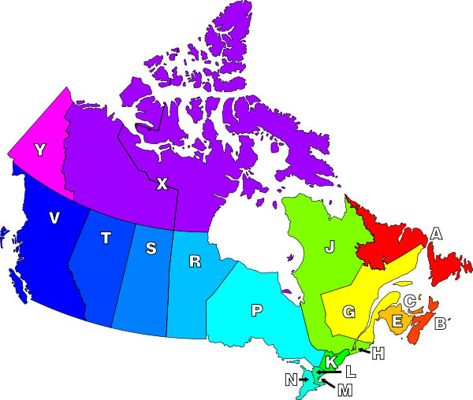
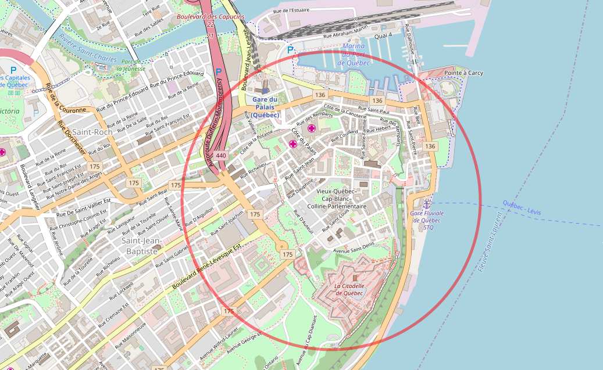

Québec (Québec), Canada
https://www.openstreetmap.org/node/30915641
https://mapzen.com/data/metro-extracts/your-extracts/0ad8cbd03a02
You need an account to download this custom extract
Originally the oldest European settlement in North America, Québec City, located in Canada, is the only remaining fortified city walls north of Mexico. It was founded in 1608 by Samuel de Champlain, making it one of the oldest cities in North America. It has been the theatre of the Battle of the Plains of Abraham, and even if New France was ceded to the Britains in 1763, the territory is still strongly francophone.
Panorama of Quebec City from Levis (by Datch78)
Since the 1970's, the chosen language of display signs within the province of Québec is French, and it makes this part of the country very interesting to visit. However, using datasets from this province along with that from other provinces would bring an additional challenge.
After reading the documentation about the three primitive components of OpenStreetMap's conceptual data model, it is easier to understand what information we can get from the dataset. The node is used to describe a single point on the earth's surface, while the way is an ordered list of nodes that defines a polyline. A relation documents the relationship between two or more data elements (nodes, ways or relations).
As the OSM file of the city is only about 150MB, it was not a problem to open it in fast text editor as SublimeText3. The Unix-like shell could also be used with the less command, considered a more powerful version of the more command which is used to display information one page at a time.
In French, the road name is not necessarily followed by its type, as it is in English. It causes a lot of problems for auditing, because it follows the structure of French language.
As an example, the word "rue" in French (which means "street" in English) is commonly seen before the actual street name, as in rue Principale. But the audit showed many cases like 48e Rue Ouest and the even weirder 6e Rue de l'Aéroport, which for the latter is in fact the whole name!
Another case is the word "allée" in French (which means "alley" in English), that can be seen before or within the name. For example, allée des Gouverneurs and Grande Allée Est.
The same happens for the word "avenue" in French (which has the same meaning as in English), where it can be seen before and after the name. For example, 10e Avenue Est and avenue Saint-Pascal (no, no, the latter is not about me).
Not only is it hard to define the road types, but additionally, there are many different types of road used in this map area. Fortunately, using the guidelines provided by Canada Post, it was possible to be aware of the many possible road types, along with their abbreviations. It was very handy.
Allée (Alley) ALLÉE (ALLEY)Autoroute (Highway) AUT (HWY)Avenue AV (AVE)Boulevard BOUL (BLVD)Carré (Square) CAR (SQ)ChausséeChemin (pathway) CH (PTWAY)CoursCroissant (Crescent) CROIS (CRES)Impasse (Cul-de-sac) IMP (CDS)Montée (Rise) MONTÉE (RISE)Passage (Crossing) PASS (CROSS)Place PLACE (PL)Quai (Quay) QUAI (QUAY)Rang (Row) RANG (ROW)Route (Road) RTE (RD)Rue (Street) RUE (ST)Ruelle (Lane) RLE (LANE)Terrasse (Terrace) TSSE (TERR)
The way addresses are written in French does not follow the same guidelines as in English. The script check_osm_roads.py allows to pick up on some entries that contained English words.
The official French address writing guideline, from la Banque de dépannage linguistique du Québec, allows to denote the complexity of the rules. The roadname_reformat function addresses only abbreviation and capital letters problems in the process_osm.py script.
The script check_osm_phone.py checks for unrecognizable patterns in phone numbers. This guide from la Banque de dépannage linguistique du Québec, was used to learn about official pattern. The phone_num_reformat function from process_osm.py script addresses any phone formatting problems.
Postal codes formatting in Canada do not include the letters D, F, I, O, Q or U, and the first position also does not make use of the letters W or Z. Quebec city is located in the G district.

Map of postal districts in Canada (by Denelson83)
The script check_osm_postcodes.py looks for string that doesn't follow the canadian postal code formatting. Any problem is addressed by the postcode_reformat function when running the process_osm.py script.
In attempting to portray present banking operators in the region, several inconsistencies in how the data were entered quickly surfaced. For example, there were many inconsistencies in the way the name of institutions were entered in the "name" field. Sometimes the "brand" field was used, sometimes it was the "operator" field.
The bank_reformat function from process_osm.py script identifies the bank operator using the "operator" field, finding clues in the fields listed above.
quebec_city.osm 154 350 Kbquebec_city.json 171 338 Kbdb.quebec_data 188 595 Kb
> db.quebec_data.find().count()749 321
> db.quebec_data.find({"type":"node"}).count()653 926
> db.quebec_data.find({"type":"way"}).count()95 220
> db.quebec_data.distinct("created.user").length700
> db.quebec_data.aggregate([{"$group":{"_id":"$created.user", "count":{"$sum":1}}}, {"$sort":{"count":-1}}, {"$limit":5}]){ "_id" : "BrunoRemy", "count" : 216141 }{ "_id" : "canvec_fsteggink", "count" : 207041 }{ "_id" : "fsteggink", "count" : 50279 }{ "_id" : "PierZen", "count" : 32552 }{ "_id" : "Circeus", "count" : 27621 }
> db.quebec_data.aggregate([{"$match":{"tourism":{"$exists":1} }},{"$group":{"_id":"$tourism", "count":{"$sum":1}}}, {"$sort":{"count":-1}}]){ "_id" : "hotel", "count" : 93 }{ "_id" : "picnic_site", "count" : 72 }{ "_id" : "viewpoint", "count" : 56 }{ "_id" : "artwork", "count" : 37 }{ "_id" : "motel", "count" : 30 }{ "_id" : "information", "count" : 28 }{ "_id" : "attraction", "count" : 28 }{ "_id" : "guest_house", "count" : 26 }{ "_id" : "museum", "count" : 20 }{ "_id" : "camp_site", "count" : 17 }{ "_id" : "caravan_site", "count" : 4 }{ "_id" : "hostel", "count" : 3 }{ "_id" : "gallery", "count" : 3 }{ "_id" : "inn", "count" : 3 }{ "_id" : "theme_park", "count" : 1 }{ "_id" : "spa", "count" : 1 }{ "_id" : "yes", "count" : 1 }
The Desjardins Group (French: Mouvement des caisses Desjardins) is the largest association of credit unions in North America.
Head office of "La fédération des caisses du Québec" (by Bourgoinjp)
Although now based in Montreal, it was founded in 1900 in Lévis, a suburb of Quebec, by Alphonse Desjardins. Let's query for the top bank operator :
> db.quebec_data.aggregate([{"$match":{"amenity":{"$exists":1}, "$or": [{"amenity":"bank"}, {"amenity":"atm"}], "operator":{"$exists":1}}}, {"$group":{"_id": 0, "total":{"$sum":1}, "operators":{"$push":"$operator"}}}, {"$unwind": "$operators"}, {"$group":{"_id": {"operator":"$operators", "total":"$total"}, "count":{"$sum":1}}}, {"$project":{"_id": 0, "operator": "$_id.operator", "count": "$count"}}, {"$sort": {"count":-1}}, {"$limit":1}]){ "operator" : "Caisses Desjardins", "count" : 56 }
National Bank of Canada is the largest bank in Quebec, and the second largest financial institution in the province, after Desjardins. Let's query for the second top bank operator :
> db.quebec_data.aggregate([{"$match":{"amenity":{"$exists":1}, "$or": [{"amenity":"bank"}, {"amenity":"atm"}], "operator":{"$exists":1}}}, {"$group":{"_id": 0, "total":{"$sum":1}, "operators":{"$push":"$operator"}}}, {"$unwind": "$operators"}, {"$group":{"_id": {"operator":"$operators", "total":"$total"}, "count":{"$sum":1}}}, {"$project":{"_id": 0, "operator": "$_id.operator", "count": "$count"}}, {"$sort": {"count":-1}}, {"$skip":1}, {"$limit":1}]){ "operator" : "National Bank of Canada", "count" : 25 }
Things get very interesting when we compare proportionally the quantity of point of service each operator owns on the territory :
> db.quebec_data.aggregate([{"$match":{"amenity":{"$exists":1}, "$or": [{"amenity":"bank"}, {"amenity":"atm"}], "operator":{"$exists":1}}}, {"$group":{"_id": 0, "total":{"$sum":1}, "operators":{"$push":"$operator"}}}, {"$unwind": "$operators"}, {"$group":{"_id": {"operator":"$operators", "total":"$total"}, "count":{"$sum":1}}}, {"$project":{"_id": 0, "operator": "$_id.operator", "count": "$count", "proportion": {"$divide": [{ "$trunc": { "$multiply": [ {"$divide": ["$count", "$_id.total"] } , 100 ]}}, 100 ]} }}, {"$sort": {"proportion":-1}}]){ "operator" : "Caisses Desjardins", "count" : 56, "proportion" : 0.44 }{ "operator" : "National Bank of Canada", "count" : 25, "proportion" : 0.19 }{ "operator" : "TD Canada Trust", "count" : 9, "proportion" : 0.07 }{ "operator" : "Royal Bank of Canada", "count" : 10, "proportion" : 0.07 }{ "operator" : "Banque of Montreal", "count" : 10, "proportion" : 0.07 }{ "operator" : "Canadian Imperial Bank of Commerce", "count" : 6, "proportion" : 0.04 }{ "operator" : "Laurentian Bank of Canada", "count" : 6, "proportion" : 0.04 }{ "operator" : "Scotiabank Canada", "count" : 5, "proportion" : 0.03 }
The use of a geospatial index makes it possible, among other things, to determine the distance that separates elements. It could be used to push a the analysis a step further, such as how historical past of the city influenced its evolution.
The main advantage of using geolocation coordinates is to be able to use that information to draw a physical portray about any subject. The following investigation focuses on the small area (~ 2 km²) inside the red circle: this is the old city of Québec.

As the MongoDB reference manual specifies it, the $geoNear operator requires that a collection have at most only one 2dsphere and/or only one 2d index. Nodes of type "way" don't have the single point coordinate field "pos".
The set_pos_tourism.py script calculate the mean of all point coordinates of referenced nodes for the all nodes with "type:way" and "tourism:value", then sets a new "pos" field with the result.
In this case, the "pos" field was used to create both indexes:
> db.quebec_data.createIndex( { "pos": "2d" } )> db.quebec_data.createIndex( { "pos": "2dsphere" } )
The following queries show the potential of using geospatial indexing to investigate OpenStreetMap datasets by filtering out the results that are located inside the old city of Québec and those that are not.
Hotels> db.quebec_data.aggregate([{ "$geoNear": { "query": {"tourism":"hotel"}, "near": { "type": "Point", "coordinates": [ 46.811575, -71.207725 ] }, "distanceField": "qtd", "num": 800000, "spherical": true }}, {"$group":{"_id": 0, "total":{"$sum":1}, "qtd":{"$push":"$qtd"}}}, {"$unwind": "$qtd"}, {"$project": {"range": {"$concat": [ { $cond: [{$lte: ["$qtd", 1600]}, "old-city", ""]}, { $cond: [{$gt: ["$qtd",1600]}, "else", ""]} ] }, "total":"$total" } }, {"$group":{"_id": {"location":"$range", "total":"$total"}, "count":{"$sum":1}}}, {"$project":{"_id": 0, "location": "$_id.location", "count": "$count", "proportion": {"$divide": [{ "$trunc": { "$multiply": [ {"$divide": ["$count", "$_id.total"] } , 100 ]}}, 100 ]} }}, {"$sort": {"count":1}} ]){ "location" : "old-city", "count" : 44, "proportion" : 0.47 }{ "location" : "else", "count" : 49, "proportion" : 0.52 }
Viewpoints> db.quebec_data.aggregate([ { "$geoNear": { "query": {"tourism":"viewpoint"}, "near": { "type": "Point", "coordinates": [ 46.811575, -71.207725 ] }, "distanceField": "qtd", "num": 800000, "spherical": true }}, {"$group":{"_id": 0, "total":{"$sum":1}, "qtd":{"$push":"$qtd"}}}, {"$unwind": "$qtd"}, {"$project": {"range": {"$concat": [ { $cond: [{$lte: ["$qtd", 1600]}, "old-city", ""]}, { $cond: [{$gt: ["$qtd",1600]}, "else", ""]} ] }, "total":"$total" } }, {"$group":{"_id": {"location":"$range", "total":"$total"}, "count":{"$sum":1}}}, {"$project":{"_id": 0, "location": "$_id.location", "count": "$count", "proportion": {"$divide": [{ "$trunc": { "$multiply": [ {"$divide": ["$count", "$_id.total"] } , 100 ]}}, 100 ]} }}, {"$sort": {"count":1}} ]){ "location" : "old-city", "count" : 20, "proportion" : 0.35 }{ "location" : "else", "count" : 36, "proportion" : 0.64 }
Artworks> db.quebec_data.aggregate([ { "$geoNear": { "query": {"tourism":"artwork"}, "near": { "type": "Point", "coordinates": [ 46.811575, -71.207725 ] }, "distanceField": "qtd", "num": 800000, "spherical": true }}, {"$group":{"_id": 0, "total":{"$sum":1}, "qtd":{"$push":"$qtd"}}}, {"$unwind": "$qtd"}, {"$project": {"range": {"$concat": [ { $cond: [{$lte: ["$qtd", 1600]}, "old-city", ""]}, { $cond: [{$gt: ["$qtd",1600]}, "else", ""]} ] }, "total":"$total" } }, {"$group":{"_id": {"location":"$range", "total":"$total"}, "count":{"$sum":1}}}, {"$project":{"_id": 0, "location": "$_id.location", "count": "$count", "proportion": {"$divide": [{ "$trunc": { "$multiply": [ {"$divide": ["$count", "$_id.total"] } , 100 ]}}, 100 ]} }}, {"$sort": {"count":1}} ]){ "location" : "old-city", "count" : 13, "proportion" : 0.36 }{ "location" : "else", "count" : 23, "proportion" : 0.63 }
Attractions> db.quebec_data.aggregate([ { "$geoNear": { "query": {"tourism":"attraction"}, "near": { "type": "Point", "coordinates": [ 46.811575, -71.207725 ] }, "distanceField": "qtd", "num": 800000, "spherical": true }}, {"$group":{"_id": 0, "total":{"$sum":1}, "qtd":{"$push":"$qtd"}}}, {"$unwind": "$qtd"}, {"$project": {"range": {"$concat": [ { $cond: [{$lte: ["$qtd", 1600]}, "old-city", ""]}, { $cond: [{$gt: ["$qtd",1600]}, "else", ""]} ] }, "total":"$total" } }, {"$group":{"_id": {"location":"$range", "total":"$total"}, "count":{"$sum":1}}}, {"$project":{"_id": 0, "location": "$_id.location", "count": "$count", "proportion": {"$divide": [{ "$trunc": { "$multiply": [ {"$divide": ["$count", "$_id.total"] } , 100 ]}}, 100 ]} }}, {"$sort": {"count":1}} ]){ "location" : "old-city", "count" : 9, "proportion" : 0.33 }{ "location" : "else", "count" : 18, "proportion" : 0.66 }
Another suggestion would be to add historical data about road names. Not only the signification affects how the name is written, but it could also be used to geographically depict the influence of historical past over urbanism.
{kind=link}
.svg){kind=link}